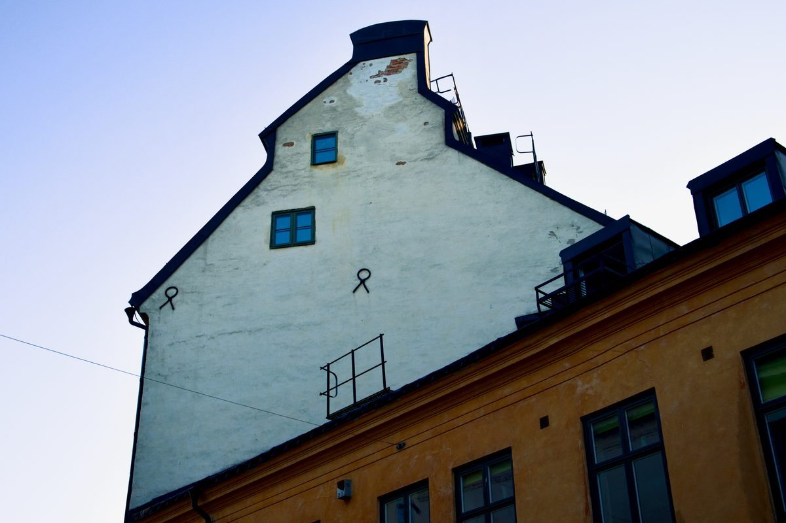
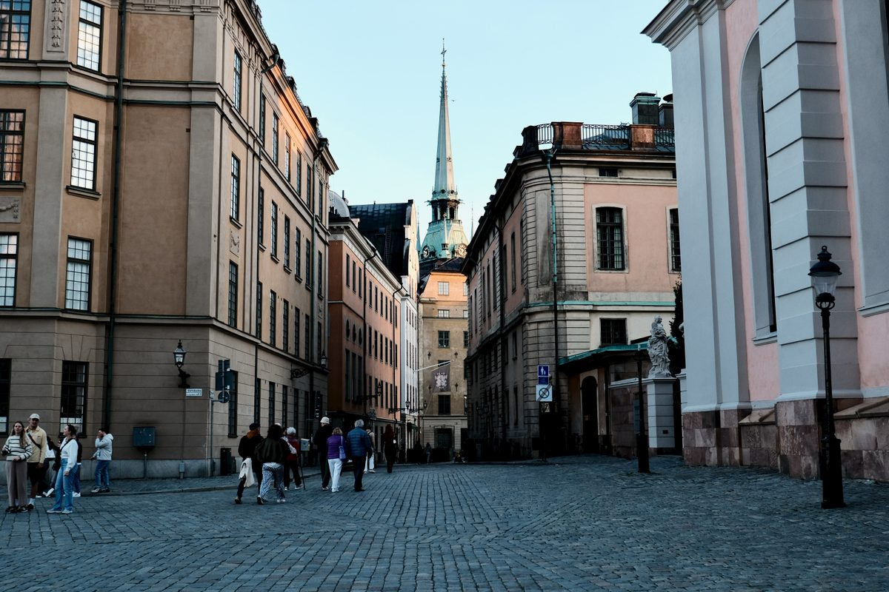
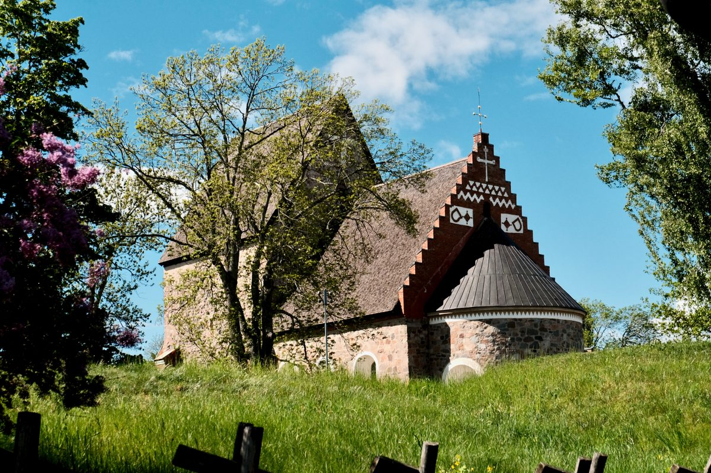
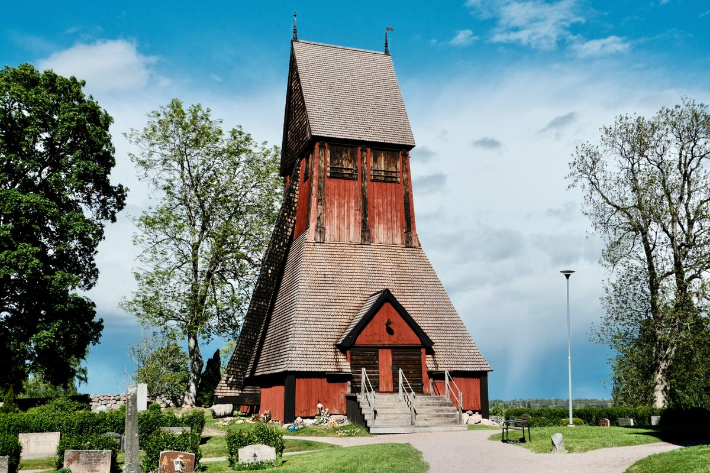
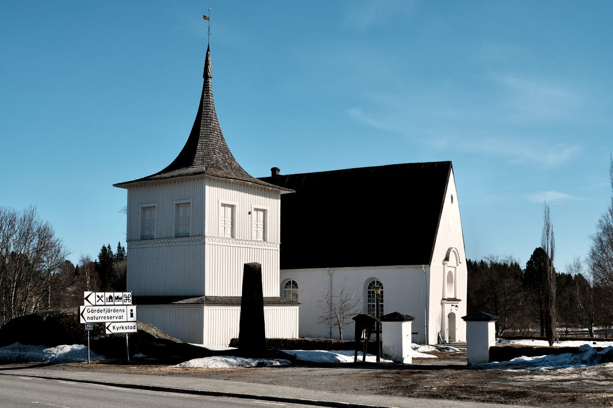
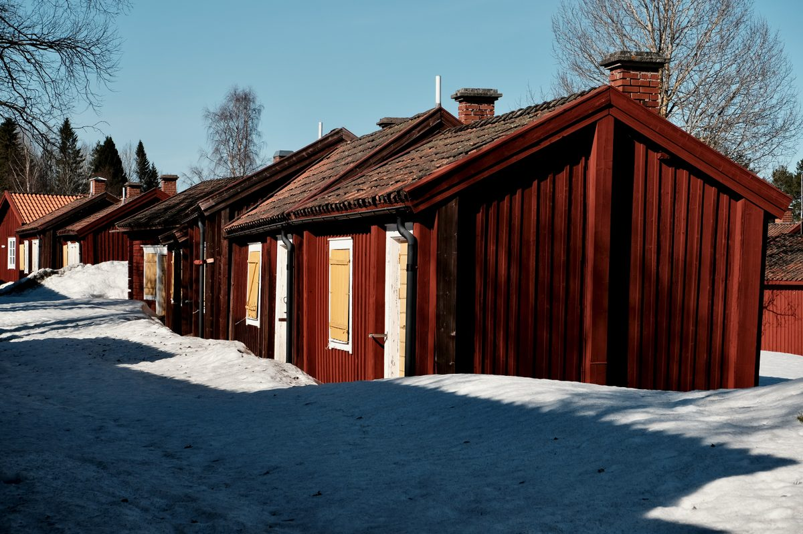

Gallery
Selected frames, organized by place, season, and mood.
A curated image-first archive. Use it as a quiet visual index rather than a chronological feed.
Photographs
No photographs found.
Reset the filters to return to the full edit.

A quiet street scene in Gamla Stan, where cobblestones, historic façades, and Swedish flags create a calm and timeless atmosphere.

A busy summer street in Gamla Stan, where historic façades, restaurant signs, and passing crowds shape the rhythm of Stockholm’s old town.

Stockholm City Hall stands quietly by the water, its brick tower framed by clouds and the soft rhythm of the city.

From Klara Mälarstrand, an elderly man sits quietly by the water, facing Riddarholmen and the layered skyline of Stockholm.

From Södra Riddarholmshamnen, the view opens across the water toward Söder Mälarstrand, where Mariahissen and the hillside buildings shape Stockholm’s layered skyline.

An old façade in Gamla Stan rises into the soft sky, revealing the quiet geometry and aged surfaces of Stockholm’s historic core.

From Yttre Borggården, the tower of Stockholm Cathedral rises beyond the palace courtyard, connecting the open square with the old city skyline.

A quiet view through Gamla Stan, where the tower of the German Church rises between old façades and cobblestone streets.

A stone ship at Anundshög, standing quietly among burial mounds and open fields near Västerås.From the story: Anundshög

The Anundshög Runestone, Vs 13, bears the inscription: “Folkvid raised all these stones in memory of his son Heden, Anund’s brother. Vred carved the runes.”From the story: Anundshög

A round bastion at Landskrona Slott, where red brick walls, water, and spring light meet in a quiet historic setting.

Landskrona Slott stands across the moat, its red brick walls and wooden bridge reflected in the calm water.From the story: Landskrona Slott

Inside the courtyard of Landskrona Slott, weathered brick walls, muted pink façades, and open space create a quiet architectural rhythm.From the story: Landskrona Slott

A passage through Landskrona Slott frames the bridge beyond, turning brick, shadow, and daylight into a quiet architectural sequence.

Red brick, tiled roofs, and soft clouds define the quiet architectural character of Landskrona Slott.From the story: Landskrona Slott

At Ales Stenar, standing stones form a quiet ship-shaped monument above the coast, held between open ground and a heavy Nordic sky.From the story: Ales Stenar

A single standing stone anchors the view at Ales Stenar, surrounded by the wider stone ship and the muted openness of the Skåne coast.From the story: Ales Stenar

Ales Stenar stretches along the horizon, its standing stones silhouetted beneath a vast grey sky above the Skåne coast.From the story: Ales Stenar

The Church of Old Uppsala rises quietly above the grass, framed by trees, spring light, and the deep historical landscape of Gamla Uppsala.From the story: Church of Old Uppsala

The front of the Church of Old Uppsala stands in clear spring light, its stone façade framed by grass, benches, and a wide blue sky.From the story: Church of Old Uppsala

Beside the Church of Old Uppsala, the wooden bell tower stands quietly among trees and gravestones, adding a warm historic presence to the churchyard.From the story: Church of Old Uppsala

Runestone U 978, set into the wall of the Church of Old Uppsala, carries the inscription: “Sigvid, the England traveller, raised this stone in memory of Vidjärv, his father …”From the story: Church of Old Uppsala

Lövånger Church stands in clear spring light, its white walls and wooden bell tower set against snow, road signs, and the quiet landscape of Västerbotten.From the story: Lövånger Church

Lövånger Church stands in sharp spring light, its white walls and dark roof contrasting with melting snow and the clear northern sky.From the story: Lövånger Church

Red wooden cottages line the snowy path at Lövånger Kyrkstad, preserving the quiet rhythm of a historic Swedish church town.From the story: Lövånger Church

A small red cottage at Lövånger Kyrkstad stands on the rock, its yellow door and weathered steps preserving the quiet character of the historic church town.From the story: Lövånger Church

A weathered yellow shutter set into red timber, preserving the texture, age, and quiet character of Lövånger Kyrkstad.From the story: Lövånger Church

Scandinavia's best-preserved medieval stronghold, mirrored in its moat.From the story: The Stronghold at Glimmingehus

Inside the walls at Glimmingehus, a cobbled courtyard with a wooden pillory at its heart.From the story: The Stronghold at Glimmingehus

Raised by Gísl in memory of his son Ásl, who died in England — its runes still traced in red across the granite.

Attributed to the carver Livsten, its whole face is filled by a single looping serpent in red.

An eleventh-century rock carving retelling the saga of Sigurd the dragon-slayer, its runic band recording a bridge raised across the Ramsund channel.From the story: The Sigurd Carving at Ramsund

The dragon's body carries the runes — the memorial text recording a bridge raised across the Ramsund channel.From the story: The Sigurd Carving at Ramsund

Saga figures in red: beasts and a bird from the Sigurd legend, threaded above the runic band.From the story: The Sigurd Carving at Ramsund

The horse Grani and the saga's birds, carved above the running line of runes.From the story: The Sigurd Carving at Ramsund

Helsingborg's medieval keep, completed around 1320 and still the city's landmark above the Sound.From the story: Kärnan: Helsingborg's Medieval Keep

Visitors gather on the terrace steps below Helsingborg's medieval keep.From the story: Kärnan: Helsingborg's Medieval Keep

Hard spring light on the terrace steps that climb to Helsingborg's old castle hill.From the story: Kärnan: Helsingborg's Medieval Keep

The grand Terrace Staircase climbing from the old town up to Kärnan's hill.From the story: Kärnan: Helsingborg's Medieval Keep